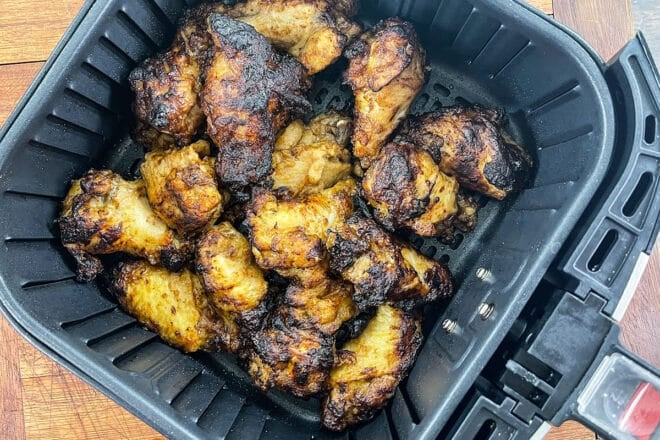

Frozen Air Fryer Wings

Description
Wings are one of my Favorite meals. It sometimes feels like a tall order to make a whole batch of wings. Follow this recipe and you can easily make frozen wings into an incredible meal!
Ingredients
- However many wings you want
- Wing sauce
- Salt and pepper
- Olive Oil
Steps
Home